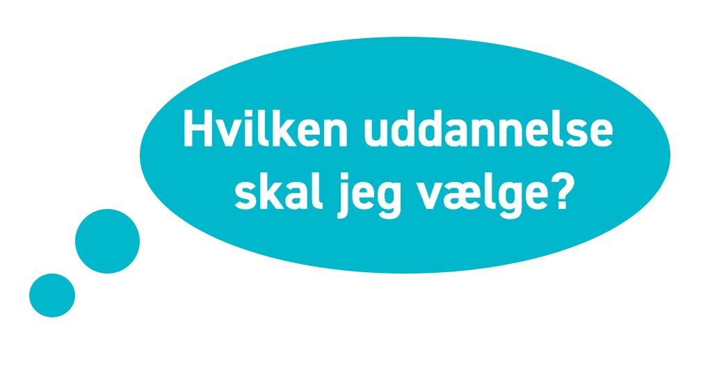
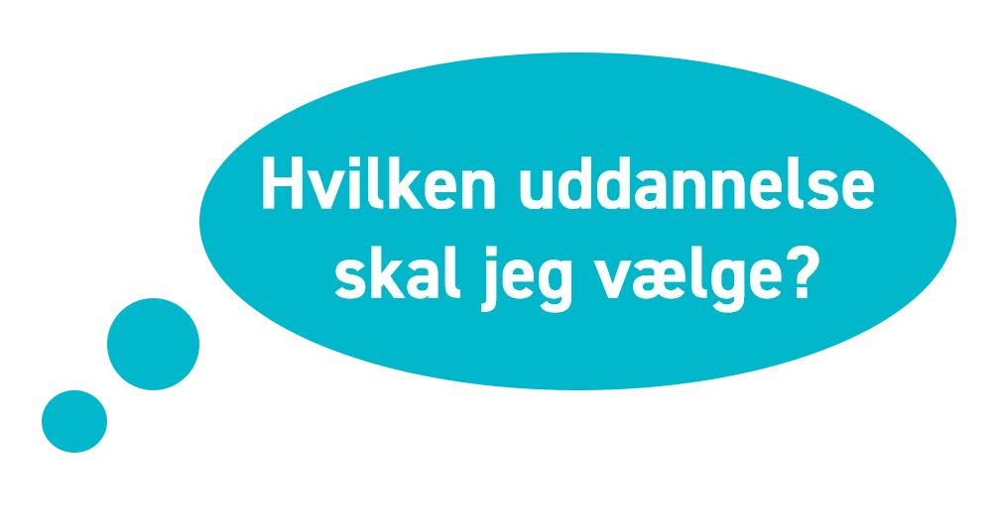
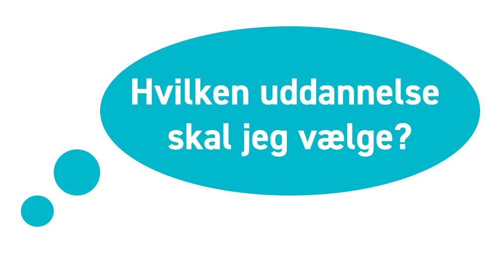

Et interaktionsspil udarbejdet i samarbejde med Erhversakademi Aarhus
 

Klik på pilen for at gå videre!
Et interaktionsspil udarbejdet i samarbejde med Erhversakademi Aarhus

Klik på pilen for at gå videre!

Video

Lyd

Valg
I løbet af vores interaktions spil vil du møde spillets hovedperson Niclas, som du følger helt til spillets ende. I løbet af spillet vil du møde video og lyd, som du skal interagere med. Du vil ligeledes få nogle muligheder, som du skal vælge imellem. Niclas er nemlig rigtig forvirret omkring uddannelsesvalg - og han skal derfor bruge DIN hjælp. Han har nogle klare interesser og mål. Kan du hjælpe ham med at træffe det rigtige valg?
Hils på din nye ven, stifinderen!
Stifinderen er en hjælpende hånd, som følger dig igennem hele spillet og indikerer hvor langt du er i spillet og om du fører Niclas på rette vej.
Vi håber du vil komme til at lide den ligeså meget som os!
Information om Niclas
Vælg en institution
Trin 1

Vælg uddannelse på EAAA
Trin 2


Vælg uddannelse på AU
Trin 2


Du har desværre valgt forkert
Trin 3
Du har valgt at Niclas skal starte på uddannelsen: Uddannelsens navn
Det er han godt nok lidt ked af .. Husk at lyt efter dig selv, når det kommer til valg af uddannelse.
Husk at vælg din uddannelse ud fra de rigtige parametre.
En stor procentdel falder fra hvis de ikke vælger en uddannelse som fanger deres faglige interesser, med et socialt miljø som passer dem.
Mærk efter .. Det er trods alt din fremtid det drejer sig om!
Credits
Hovedperson: Niclas Palm
Skrevet og instureret af: Andreas Deleuran Holm Nielsen
Produceret af: Victor Sletting
Fotograf: Victor Sletting og Andreas Deleuran Holm Nielsen
Belysningsmester og Grading: Rune Christoffersen
Lyd og Musik: Niclas Palm
Produktions assistent: Rune Christoffersen
HTML opsætning: Andreas, Rune, Niclas og Victor
CSS styling: Andreas, Rune, Niclas og Victor
Javascript strukturering: Andreas Deleuran Holm Nielsen
Javascript udvikling: Andreas, Rune, Niclas og Victor
SEO og page load time: Niclas Palm
Wireframes: Andreas, Rune, Niclas og Victor
XD Mockups: Andreas, Rune, Niclas og Victor
Grafiske elementer: Andreas, Rune, Niclas og Victor
Billed redigering: Niclas Palm
Creative brief: Andreas, Rune, Niclas og Victor
Visuel identitet: Andreas, Rune, Niclas og Victor
Research: Andreas, Rune, Niclas og Victor
Analyse data: Andreas, Rune, Niclas og Victor
Persona Andreas, Rune, Niclas og Victor
Målgruppe segmentering Andreas, Rune, Niclas og Victor
Hov ... Du skal lige vippe telefonen engang gamle dreng.